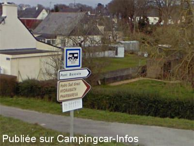
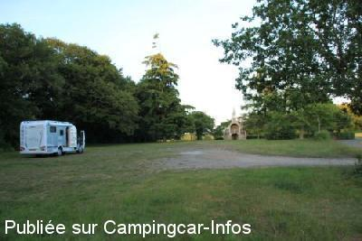

ASN = Aire de services avec stationnement nuit possible de :
LANGUIDIC
(N° 608)
Accès/adresse :
Rue de la Résistance
Lanveur
56440 LANGUIDIC
Lanveur
56440 LANGUIDIC
Latitude : (Nord) 47.83731° Décimaux ou 47° 50′ 14′′
Longitude : (Ouest) -3.16165° Décimaux ou -3° 9′ 41′′
Tarif : Gratuit
Type de borne : Artisanale
Services :


Un seul robinet d'eau
Autres informations :
Ouverte toute l'année
20 emplacements
Un seul robinet d'eau
Tel : +33 (0)297 651 919
http://www.languidic.fr

Le 07/06/2013 par lelito

Le 08/06/2011 par vusisa
de
Cédric
le 20/09/2015 :
Je me permets de revenir sur le parking de la chapelle St Urlo dont il est fait mention dans les commentaires ci-avant. Malheureusement ce parking n'est plus accessible, une barrière en obstrue l'entrée à tout véhicule. (C'est une jolie petite chapelle à voir cependant.)
Je me permets de revenir sur le parking de la chapelle St Urlo dont il est fait mention dans les commentaires ci-avant. Malheureusement ce parking n'est plus accessible, une barrière en obstrue l'entrée à tout véhicule. (C'est une jolie petite chapelle à voir cependant.)
de
ben
le 10/09/2012 :
vidange eaux grise et toilette ok. par contre pas de raccord sur le robinet où s'est écrit en gros rinçage cassette
vidange eaux grise et toilette ok. par contre pas de raccord sur le robinet où s'est écrit en gros rinçage cassette
de
vusisa
le 08/06/2011 :
31/05/2011
Comme était dit dans les commentaires précédents cet endroit est super calme pour la nuit.
Je vous mets une photo du parking à la chapelle Sainte Urlo.
31/05/2011
Comme était dit dans les commentaires précédents cet endroit est super calme pour la nuit.
Je vous mets une photo du parking à la chapelle Sainte Urlo.
de
JMC
le 05/04/2009 :
Pour ceux qui auraient des difficultés à trouver le parking de la petite chapelle de St Urlo,voici les coordonnées:
N 47.84039° W 3.19698
Pour ceux qui auraient des difficultés à trouver le parking de la petite chapelle de St Urlo,voici les coordonnées:
N 47.84039° W 3.19698
de
J.M.
le 03/08/2007 :
Vidange et plein d'eau faciles, avec robinet 1/4 de tour. Stationnement rebutant et peu aisé dans le village. Les camping-cars vont faire le plein d'eau et repartent aussi sec! Quel avantage pour la commune? Ca a un goût de "pas fini". Enfin, merci pour l'eau.
Vous pouvez trouver un refuge calme et champêtre sur le parking de la petite chapelle de St URLO (petite route à droite qui traverse la N24, à 2 ou 3 km du village en direction d'Hennebont). Pour le régal des sportifs: départ d'un circuit VTT très fun. Jonction avec la piste cyclable du Blavet, régal des contemplatifs...
Vaste parking à Hennebont sur les quais, rive gauche, face au camping (rive droite).
Vidange et plein d'eau faciles, avec robinet 1/4 de tour. Stationnement rebutant et peu aisé dans le village. Les camping-cars vont faire le plein d'eau et repartent aussi sec! Quel avantage pour la commune? Ca a un goût de "pas fini". Enfin, merci pour l'eau.
Vous pouvez trouver un refuge calme et champêtre sur le parking de la petite chapelle de St URLO (petite route à droite qui traverse la N24, à 2 ou 3 km du village en direction d'Hennebont). Pour le régal des sportifs: départ d'un circuit VTT très fun. Jonction avec la piste cyclable du Blavet, régal des contemplatifs...
Vaste parking à Hennebont sur les quais, rive gauche, face au camping (rive droite).
de
Xtian74
le 06/04/2007 :
Coordonnées GPS controlées et rectifiées. Pour ceux qui n'ont pas de GPS, l'aire est aisée à trouver : sortir de la 4 voies Hennebont/Rennes à Languidic. L'aire se situe en contrebas de la route qui va de Languidic au village de Lanveur, juste après le pont sur la 4 voies.
On regrettera peut-être que le robinet d'eau serve autant à l'eau fraiche qu'à rincer les cassettes à eaux noires.
Coordonnées GPS controlées et rectifiées. Pour ceux qui n'ont pas de GPS, l'aire est aisée à trouver : sortir de la 4 voies Hennebont/Rennes à Languidic. L'aire se situe en contrebas de la route qui va de Languidic au village de Lanveur, juste après le pont sur la 4 voies.
On regrettera peut-être que le robinet d'eau serve autant à l'eau fraiche qu'à rincer les cassettes à eaux noires.
de
LE GUYADER
le 29/10/2005 :
Aire pratique pour les services eau et vidanges mais mal située près de la 4 voies. Le parking situé dans la bourg est plus convivial pour y passer la nuit.
Aire pratique pour les services eau et vidanges mais mal située près de la 4 voies. Le parking situé dans la bourg est plus convivial pour y passer la nuit.